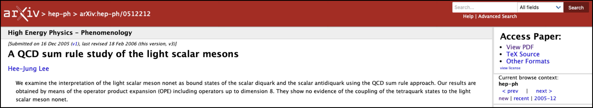
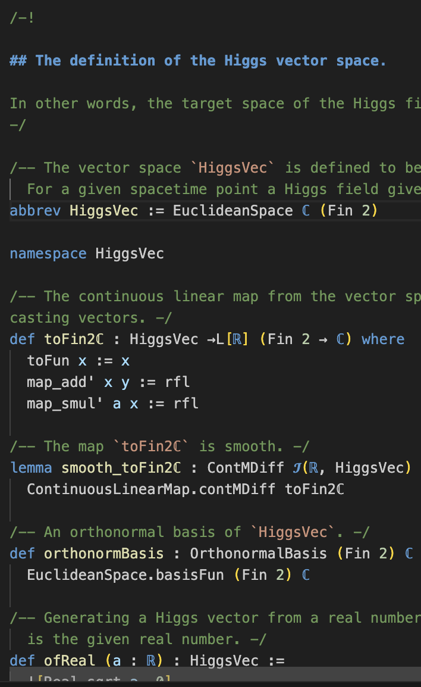
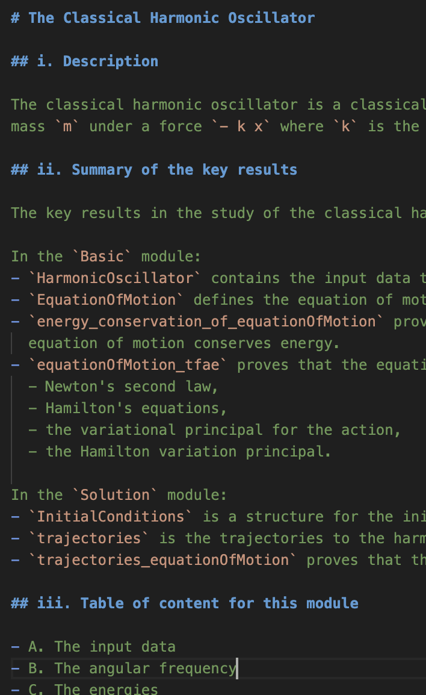
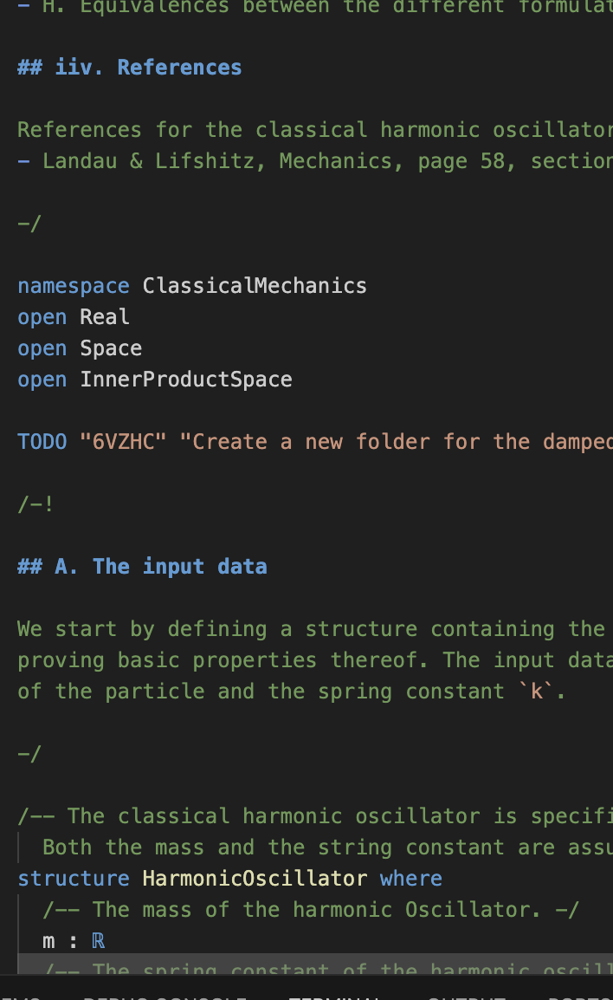
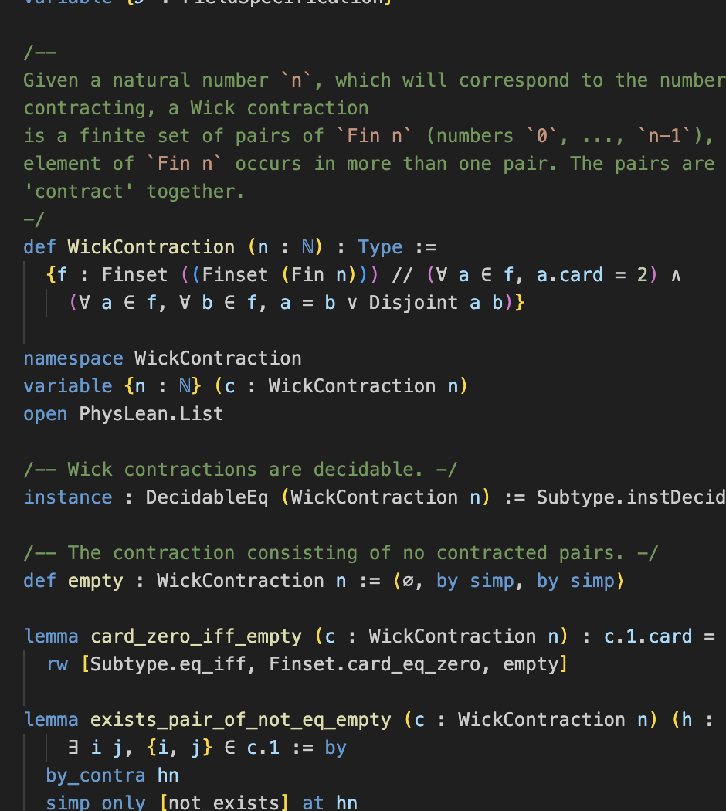
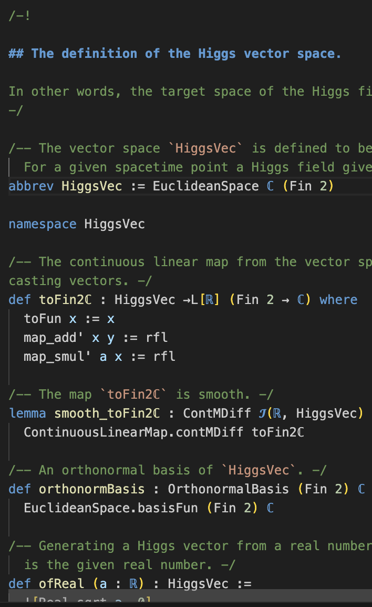
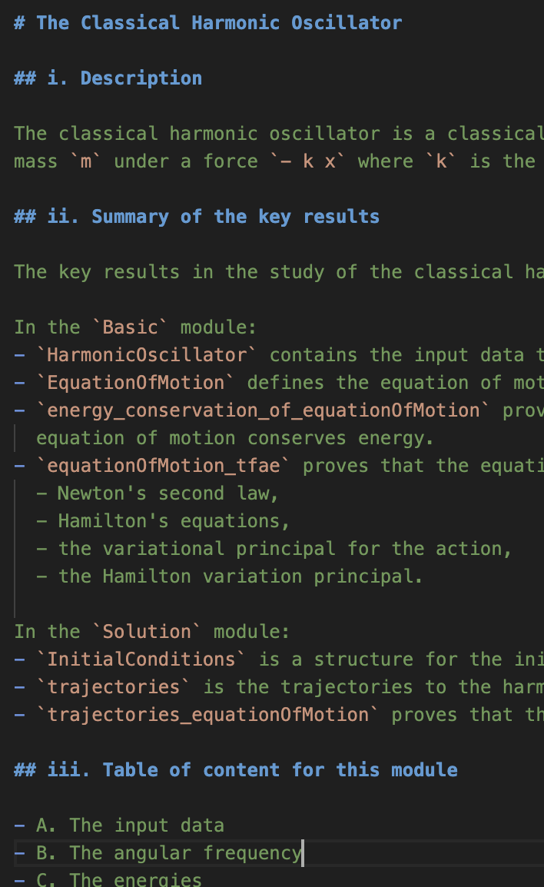
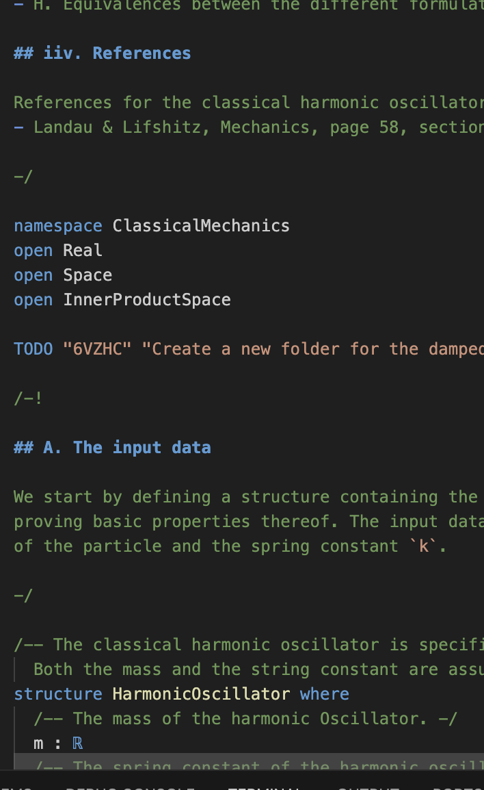
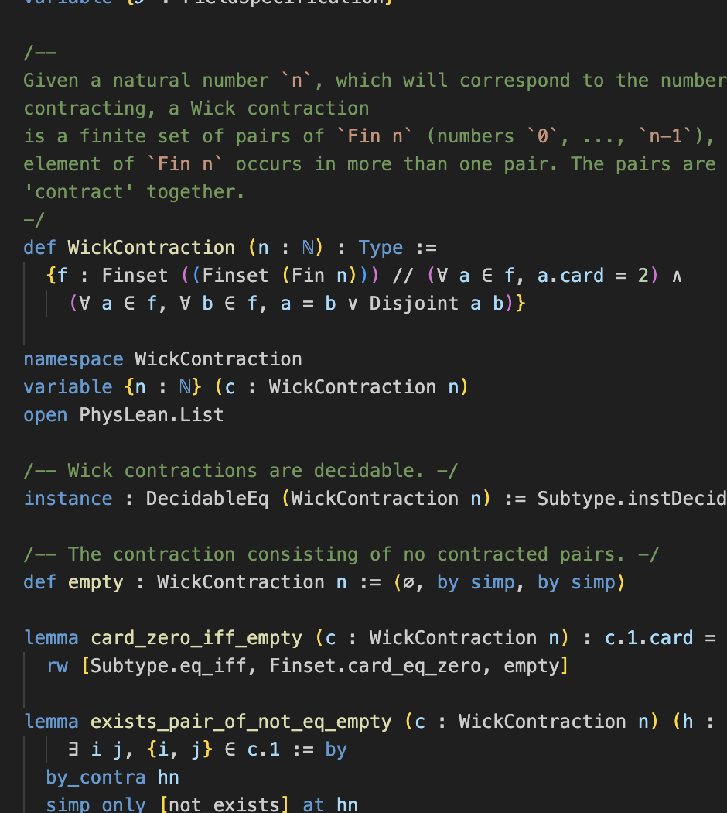

Scan for slides

Digitalizing physics into Lean 4
"A talk for physicists"
Joseph Tooby-Smith, University of Bath
Slides at: https://josephtoobysmith.com/Slides/CambridgeHEP2025.html
Talk overview
Story 1
CrowdStrike incident

Story 2: The arXiv paper hep-ph/0512212
$E = A_1 + A_2 + A_3 + \ldots + A_n$
$E = A_1 + A_2 + A_3 + \ldots + A_n + B_1 + B_2$
$E = A_1 + A_2 + A_3 + \ldots + A_n$
$E = A_1 + A_2 + A_3 + \ldots + A_n + B_1 + B_2$



Different Manifestations of the Same Problem
A solution
Correct by construction
Proof assistants
Popular Proof Assistants
Rocq
Isabelle/HOL
Lean
Agda
An example of Lean
View at: https://josephtoobysmith.com/Slides/CambridgeHEP2025.html
How Lean Works
- • Define types by their terms
- • Create new types from existing ones
- • Propositions as types
- • Proofs are terms of proposition types
- • Uses axioms like function extensionality
Advantages of Proof Assistants
Mathematicians Pre-2017: One-off projects
1998-2015 (Isabelle/HOL)
Kepler conjecture (Hales' proof)
2004 (Isabelle/HOL)
Prime number theorem
2004 (Rocq)
Four color theorem
2005 (Isabelle/HOL)
Jordan Curve theorem
2013 (Rocq)
Odd order theorem
Mathematicians Post-2017: Mathlib
- • A monolithic library of mathematics formalized in Lean
- • Started in 2017
- • Over 400 contributors, 80,000 definitions and 160,000 theorems
- • Promoted heavily by Kevin Buzzard
 






